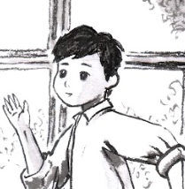
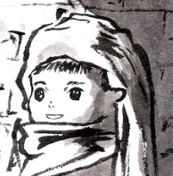
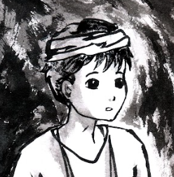

人物介紹
現代人物：
徐心昀
本書主角。是一位就讀高二的二代基督徒。
「星期天，我更不行了。」
「星期天，我更不行了。」
劉萱樂
徐心昀的同班同學，與徐心昀從小就認識的非基督徒好友。
「安啦，你還不放心國中小都跟你同班的我嗎！」
「安啦，你還不放心國中小都跟你同班的我嗎！」

林恆陽
徐心昀的同班同學，是一位十分關心身旁的人，找機會就會傳福音的基督徒。
「我對班上每一位同學都一樣關心。」
「我對班上每一位同學都一樣關心。」
蔡元長
徐心昀的同班同學，是一名非基督徒。
「你該不會跟林恆陽一樣是基督徒，討厭同性戀吧？」
「你該不會跟林恆陽一樣是基督徒，討厭同性戀吧？」
王啟年
徐心昀的同班同學。
「⋯⋯」
「⋯⋯」
陳婉茹
徐心昀的同班同學。
「⋯⋯」
「⋯⋯」
葉康然
徐心昀的教會朋友。
「要是哪天 神呼召我去當宣教士，你說我是拒絕呢、還是拒絕呢？」
「要是哪天 神呼召我去當宣教士，你說我是拒絕呢、還是拒絕呢？」
古代人物：

伯里克利
徐心昀穿越到地下城後，成為的人物角色（魂穿）。
「為什麼這些人都這麼堅持相信耶穌呢？他們明明遭受慘無人道的迫害啊！」
「為什麼這些人都這麼堅持相信耶穌呢？他們明明遭受慘無人道的迫害啊！」

索弗克勒斯
徐心昀穿越到地下城後，第一個遇到的人。
「願祢旨意成全，願祢榮耀顯明，願祢再來。」
「願祢旨意成全，願祢榮耀顯明，願祢再來。」
雅居推底
徐心昀到以弗所後，認識的基督徒。
「相信在主裡我們還會相見的。」
「相信在主裡我們還會相見的。」
巴狄麥
徐心昀在亞底米神廟前遇到的瘸腿老人。
「聽說亞底米女神非常靈驗，是我唯一的希望了。」
「聽說亞底米女神非常靈驗，是我唯一的希望了。」